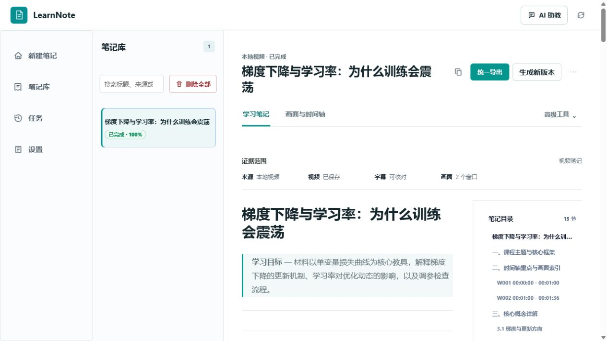
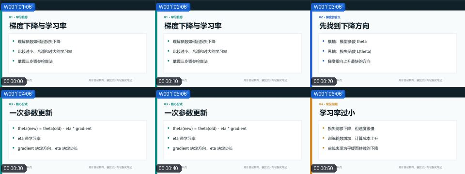

选择正在看的内容
网页视频从扩展侧栏发送；本地文件直接拖入；B 站和常见视频链接也可以粘贴处理。
从当前课程页、本地视频或视频链接开始。LearnNote 在你的电脑上完成下载、转写与切片，再把原话、画面和知识结构放进同一份笔记。

操作路径保持简单，复杂处理留在客户端后台完成。
网页视频从扩展侧栏发送；本地文件直接拖入；B 站和常见视频链接也可以粘贴处理。
下载、转写、关键帧和视觉窗口按时间轴组织。首页只显示当前任务进度，不让参数淹没操作。
结论能回到字幕和画面核对；同一视频可以按认真学习、快速回顾或备考重新整理。
这不是占位截图。我们制作了一段 01:36 的中文教学微课，让 LearnNote 从本地视频开始，完整执行转写、抽帧、视觉理解和证据化笔记生成。

学习率太小时，参数每次移动距离有限，收敛缓慢；学习率太大时，更新会跨过低点并在两侧来回震荡。笔记把这个结论分别对齐到字幕和损失曲线画面。

可信度保护：模型第一次扩写了视频中没有出现的工具和案例，LearnNote 的证据检查触发修订，最终笔记只保留字幕与画面能够支持的内容。
查看案例生成脚本视频、字幕与任务产物默认保存在你选择的本地目录。只有启用云端转写或 AI 模型时，所需内容才会发送给对应服务商。
客户端是完整工作台；浏览器扩展只负责把当前播放页交给客户端。